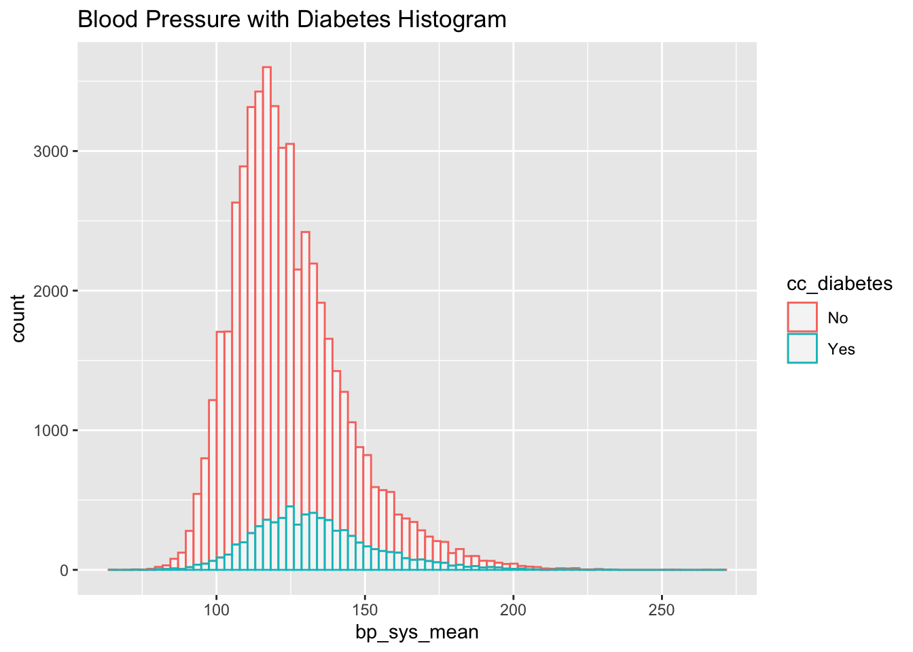
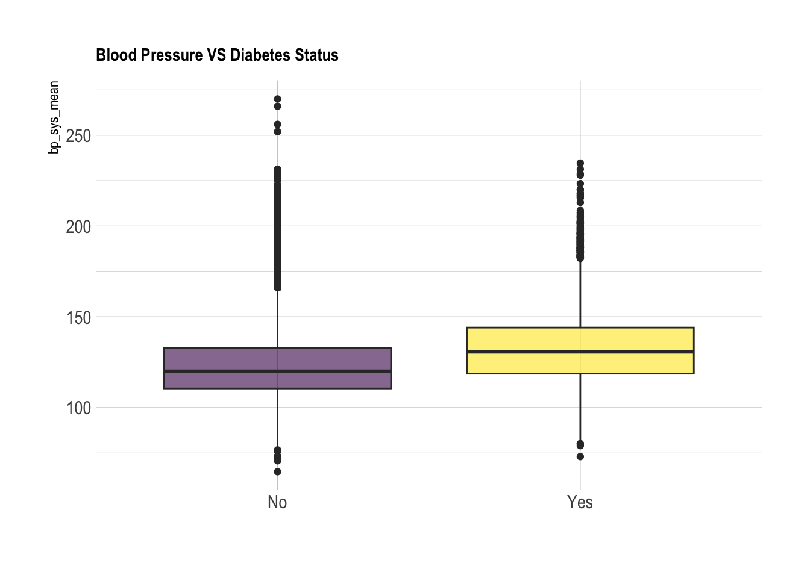
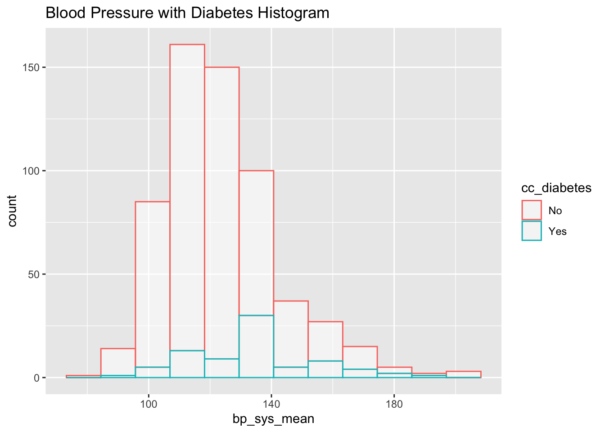
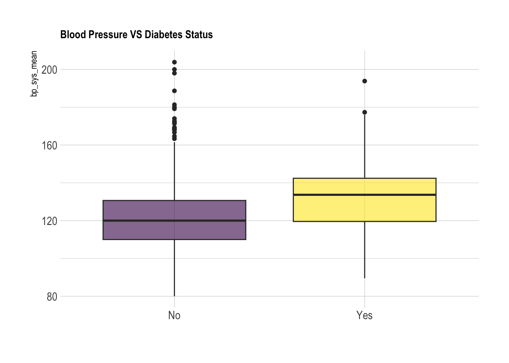
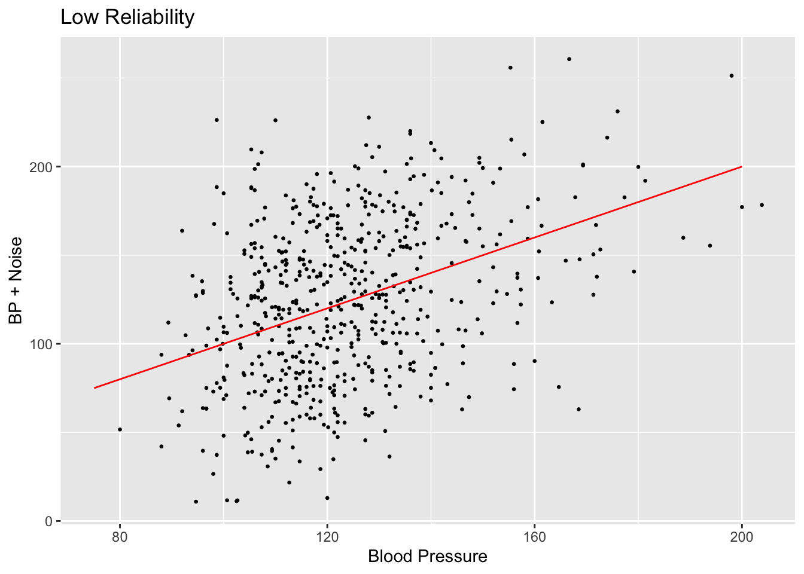
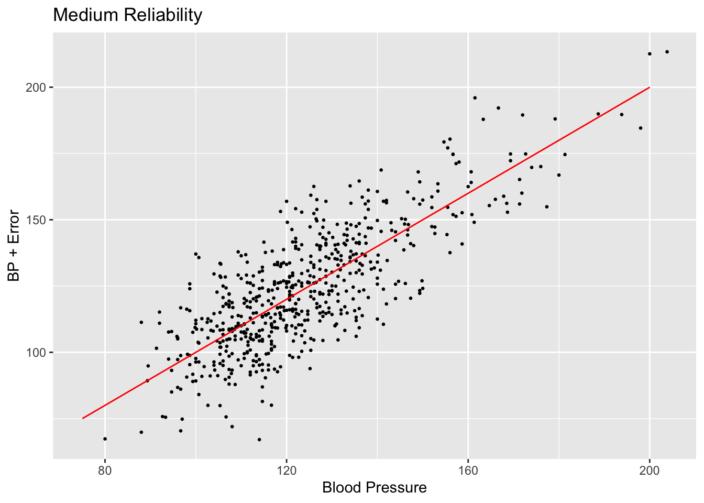
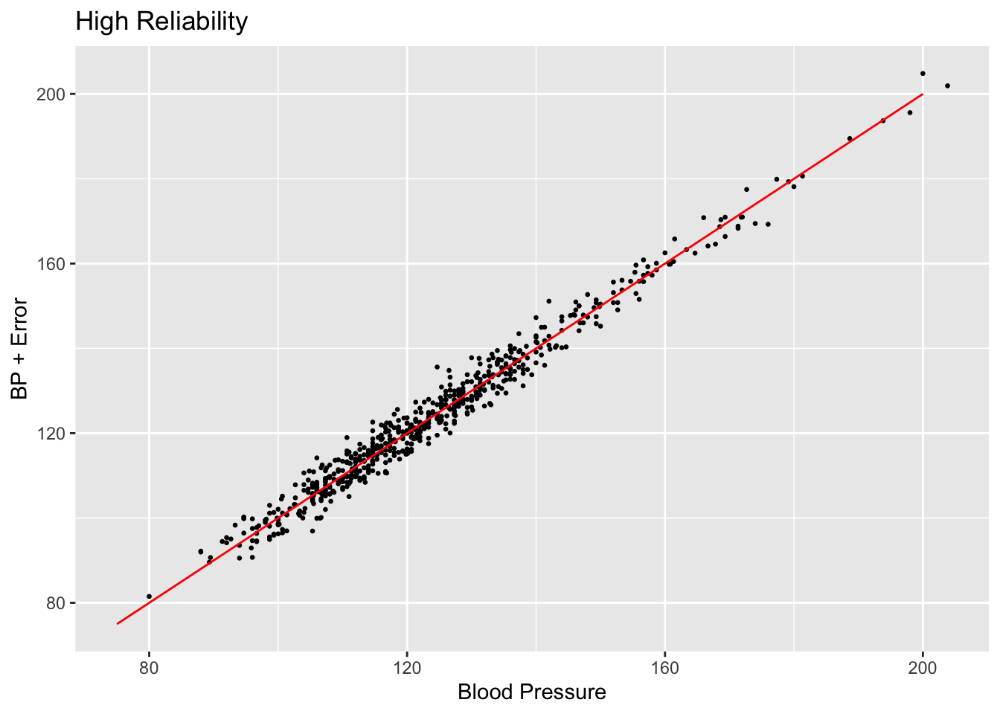
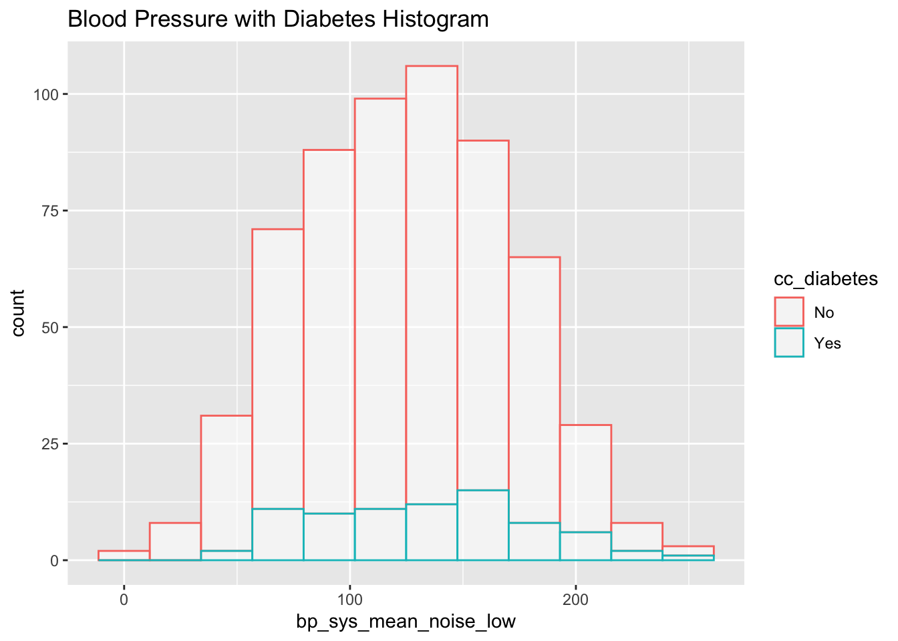
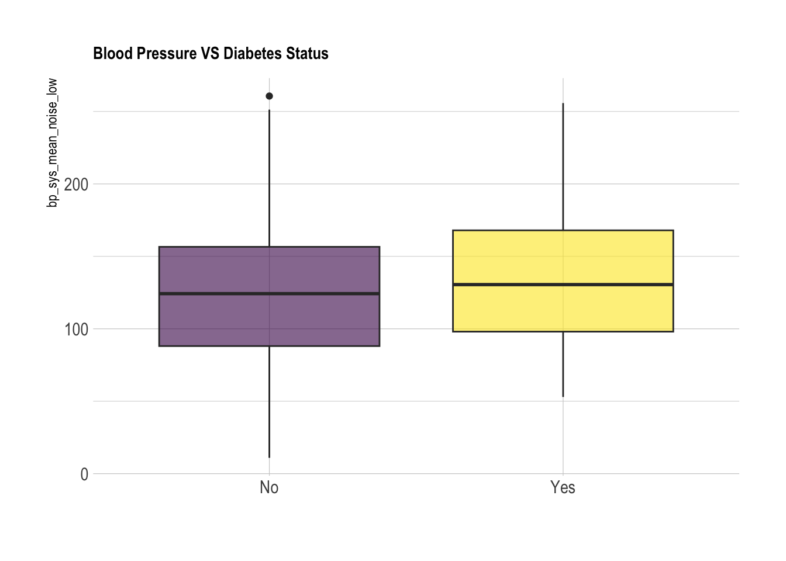

library(dplyr)
library(tidyverse)
library(tibble)
library(ggplot2)
library(knitr)
library(hrbrthemes)
library(viridis)
library(devtools)
#using data specified in this github repository:
install_github("jhs-hwg/cardioStatsUSA")
library(cardioStatsUSA)5 Creating “Noisy” Data
#to prevent errors, exclude the rows with na
used_vars = c('cc_diabetes', 'bp_sys_mean', 'demo_age_years', 'demo_race', 'demo_gender', 'cc_bmi', 'cc_smoke', 'bp_med_use')
clean_nhanes <- nhanes_data[complete.cases(nhanes_data[,..used_vars]), ]In normal usage of measurement error techniques, the data is assumed to have systematic error arising from measurement of the variables which we aim to remedy. In our case, we believe that the NHANES data has no measurement error, so we will instead simulate error by adding in random noise to the existing data to create a “noisy” dataset.
First, let’s remind ourselves the relationship between blood pressure and diabetes visually:
clean_nhanes %>%
ggplot(aes(x=bp_sys_mean, color=cc_diabetes)) +
geom_histogram(fill="white", alpha=0.5, bins = 80) +
ggtitle("Blood Pressure with Diabetes Histogram")
clean_nhanes %>%
ggplot(aes(x=cc_diabetes, y=bp_sys_mean, fill=cc_diabetes)) +
geom_boxplot() +
scale_fill_viridis(discrete = TRUE, alpha=0.6) +
theme_ipsum() +
theme(
legend.position="none",
plot.title = element_text(size=11)
) +
ggtitle("Blood Pressure VS Diabetes Status") +
xlab("")
With this much data, the true true statistic (in this case, the mean blood pressure values for both groups) will be clear no matter how much noise we add. However, in normal circumstances we would not have this much data. We can instead mimic more realistic scenarios by taking a smaller subset of this data to examine. The goal will be to add noise to obscure the relationship between diabetes and blood pressure, and then use measurement error correction to rediscover the true relationship.
Let’s start by taking a subset of n=150. Since in the total data set, about 13% of individuals had diabetes, we will keep this ratio similar here.
set.seed(19)
#original: seed 52, subset yes = 20, subset no = 130
subset_diab_yes <- subset(clean_nhanes, cc_diabetes == "Yes")
subset_diab_no <- subset(clean_nhanes, cc_diabetes == "No")
sample_diab_yes <- subset_diab_yes[sample(1:nrow(subset_diab_yes), 78, replace=FALSE),]
sample_diab_no <- subset_diab_no[sample(1:nrow(subset_diab_no), 522, replace=FALSE),]
subset_nhanes <- rbind(sample_diab_yes, sample_diab_no)
head(subset_nhanes)| svy_id | svy_weight_mec | svy_psu | svy_strata | svy_year | svy_subpop_htn | svy_subpop_chol | demo_age_cat | demo_race | demo_race_black | demo_age_years | demo_pregnant | demo_gender | bp_sys_mean | bp_dia_mean | bp_cat_meds_excluded | bp_cat_meds_included | bp_control_jnc7 | bp_control_accaha | bp_control_escesh_1 | bp_control_escesh_2 | bp_control_140_90 | bp_control_130_80 | bp_uncontrolled_jnc7 | bp_uncontrolled_accaha | bp_uncontrolled_escesh_1 | bp_uncontrolled_escesh_2 | bp_uncontrolled_140_90 | bp_uncontrolled_130_80 | bp_med_use | bp_med_recommended_jnc7 | bp_med_recommended_accaha | bp_med_recommended_escesh | bp_med_n_class | bp_med_n_pills | bp_med_combination | bp_med_pills_gteq_2 | bp_med_ace | bp_med_aldo | bp_med_alpha | bp_med_angioten | bp_med_beta | bp_med_central | bp_med_ccb | bp_med_ccb_dh | bp_med_ccb_ndh | bp_med_diur_Ksparing | bp_med_diur_loop | bp_med_diur_thz | bp_med_renin_inhibitors | bp_med_vasod | htn_jnc7 | htn_accaha | htn_escesh | htn_aware | htn_resistant_jnc7 | htn_resistant_accaha | htn_resistant_jnc7_thz | htn_resistant_accaha_thz | chol_measured_never | chol_measured_last | chol_total | chol_total_gteq_200 | chol_total_gteq_240 | chol_hdl | chol_hdl_low | chol_trig | chol_trig_gteq_150 | chol_ldl | chol_ldl_5cat | chol_ldl_lt_70 | chol_ldl_gteq_70 | chol_ldl_lt_100 | chol_ldl_gteq_100 | chol_ldl_gteq_190 | chol_ldl_persistent | chol_nonhdl | chol_nonhdl_5cat | chol_nonhdl_lt_100 | chol_nonhdl_gteq_100 | chol_nonhdl_gteq_220 | chol_med_use | chol_med_use_sr | chol_med_statin | chol_med_ezetimibe | chol_med_pcsk9i | chol_med_bile | chol_med_fibric_acid | chol_med_atorvastatin | chol_med_simvastatin | chol_med_rosuvastatin | chol_med_pravastatin | chol_med_pitavastatin | chol_med_fluvastatin | chol_med_lovastatin | chol_med_other | chol_med_addon_use | chol_med_addon_recommended_ahaacc | chol_med_statin_recommended_ahaacc | chol_med_recommended_ever | ascvd_risk_vh_ahaacc | cc_smoke | cc_bmi | cc_diabetes | cc_ckd | cc_acr | cc_egfr | cc_hba1c | cc_egfr_lt60 | cc_acr_gteq30 | cc_cvd_mi | cc_cvd_chd | cc_cvd_stroke | cc_cvd_ascvd | cc_cvd_hf | cc_cvd_any |
|---|---|---|---|---|---|---|---|---|---|---|---|---|---|---|---|---|---|---|---|---|---|---|---|---|---|---|---|---|---|---|---|---|---|---|---|---|---|---|---|---|---|---|---|---|---|---|---|---|---|---|---|---|---|---|---|---|---|---|---|---|---|---|---|---|---|---|---|---|---|---|---|---|---|---|---|---|---|---|---|---|---|---|---|---|---|---|---|---|---|---|---|---|---|---|---|---|---|---|---|---|---|---|---|---|---|---|---|---|---|---|---|---|---|---|---|
| 37436 | 22062.121 | 2 | 47 | 2005-2006 | 1 | 1 | 75+ | Non-Hispanic White | No | 77 | No | Men | 134.0000 | 60.66667 | SBP of 130 to <140 or DBP 80 to <90 mm Hg | taking antihypertensive medications | No | No | Yes | Yes | Yes | No | Yes | Yes | No | No | No | Yes | Yes | Yes | Yes | Yes | Three | Three | No | Yes | Yes | No | Yes | No | No | No | No | No | No | No | Yes | No | No | No | Yes | Yes | Yes | Yes | Yes | Yes | No | No | Cholesterol has been measured previously | In the past year | 136 | No | No | 23 | Yes | 154 | Yes | 84.21057 | 70 to <100 mg/dL | No | Yes | Yes | No | No | No | 113 | 100 to <130 mg/dL | No | Yes | No | Yes | Yes | No | No | No | No | Yes | No | No | No | No | No | No | No | No | No | Yes | Yes | Yes | Yes | Never | 35+ | Yes | Yes | 95.873016 | 59.00152 | 6.6 | Yes | Yes | Yes | Yes | Yes | Yes | Yes | Yes |
| 74375 | 12536.217 | 1 | 111 | 2013-2014 | 1 | 0 | 45 to 64 | Hispanic | No | 63 | No | Women | 171.3333 | 72.66667 | SBP 160+ or DBP 100+ mm Hg | taking antihypertensive medications | No | No | No | No | No | No | Yes | Yes | Yes | Yes | Yes | Yes | Yes | Yes | Yes | Yes | One | One | No | No | Yes | No | No | No | No | No | No | No | No | No | No | No | No | No | Yes | Yes | Yes | Yes | No | No | No | No | NA | NA | NA | NA | NA | NA | NA | NA | NA | NA | NA | NA | NA | NA | NA | NA | NA | NA | NA | NA | NA | NA | NA | NA | NA | NA | NA | NA | NA | NA | NA | NA | NA | NA | NA | NA | NA | NA | NA | NA | NA | NA | Former | <25 | Yes | Yes | 141.176471 | 108.03135 | 11.2 | No | Yes | No | No | No | No | No | No |
| 124796 | 4667.865 | 1 | 167 | 2017-2020 | 1 | 0 | 45 to 64 | Non-Hispanic Black | Yes | 61 | No | Women | 133.1667 | 75.70000 | SBP of 130 to <140 or DBP 80 to <90 mm Hg | taking antihypertensive medications | No | No | Yes | No | Yes | No | Yes | Yes | No | Yes | No | Yes | Yes | Yes | Yes | Yes | Four or more | Three | Yes | Yes | Yes | No | No | No | No | No | Yes | Yes | No | No | No | Yes | No | Yes | Yes | Yes | Yes | Yes | Yes | Yes | Yes | Yes | NA | NA | NA | NA | NA | NA | NA | NA | NA | NA | NA | NA | NA | NA | NA | NA | NA | NA | NA | NA | NA | NA | NA | NA | NA | NA | NA | NA | NA | NA | NA | NA | NA | NA | NA | NA | NA | NA | NA | NA | NA | NA | Never | 35+ | Yes | No | 4.666667 | 85.04965 | 6.9 | No | No | No | No | No | No | No | No |
| 56088 | 24882.496 | 2 | 75 | 2009-2010 | 1 | 0 | 18 to 44 | Hispanic | No | 40 | No | Women | 136.6667 | 70.00000 | SBP of 130 to <140 or DBP 80 to <90 mm Hg | taking antihypertensive medications | No | No | Yes | No | Yes | No | Yes | Yes | No | Yes | No | Yes | Yes | Yes | Yes | Yes | Two | Two | No | Yes | Yes | No | No | No | No | No | No | No | No | No | No | Yes | No | No | Yes | Yes | Yes | Yes | No | No | No | No | NA | NA | NA | NA | NA | NA | NA | NA | NA | NA | NA | NA | NA | NA | NA | NA | NA | NA | NA | NA | NA | NA | NA | NA | NA | NA | NA | NA | NA | NA | NA | NA | NA | NA | NA | NA | NA | NA | NA | NA | NA | NA | Never | 35+ | Yes | No | 4.696356 | 115.83310 | 6.7 | No | No | No | No | No | No | No | No |
| 74958 | 17328.399 | 1 | 108 | 2013-2014 | 1 | 0 | 75+ | Hispanic | No | 76 | No | Women | 177.3333 | 48.00000 | SBP 160+ or DBP 100+ mm Hg | taking antihypertensive medications | No | No | No | No | No | No | Yes | Yes | Yes | Yes | Yes | Yes | Yes | Yes | Yes | Yes | Two | Two | No | Yes | No | No | No | No | Yes | Yes | No | No | No | No | No | No | No | No | Yes | Yes | Yes | Yes | No | No | No | No | NA | NA | NA | NA | NA | NA | NA | NA | NA | NA | NA | NA | NA | NA | NA | NA | NA | NA | NA | NA | NA | NA | NA | NA | NA | NA | NA | NA | NA | NA | NA | NA | NA | NA | NA | NA | NA | NA | NA | NA | NA | NA | Former | 25 to <30 | Yes | No | 9.871795 | 65.38231 | 6.9 | No | No | No | No | No | No | No | No |
| 89925 | 11090.360 | 1 | 128 | 2015-2016 | 1 | 0 | 65 to 74 | Hispanic | No | 68 | No | Women | 132.0000 | 66.00000 | SBP of 130 to <140 or DBP 80 to <90 mm Hg | taking antihypertensive medications | No | No | Yes | Yes | Yes | No | Yes | Yes | No | No | No | Yes | Yes | Yes | Yes | Yes | Four or more | Four or more | No | Yes | Yes | No | No | No | Yes | No | Yes | Yes | No | No | No | Yes | No | No | Yes | Yes | Yes | Yes | Yes | Yes | Yes | Yes | NA | NA | NA | NA | NA | NA | NA | NA | NA | NA | NA | NA | NA | NA | NA | NA | NA | NA | NA | NA | NA | NA | NA | NA | NA | NA | NA | NA | NA | NA | NA | NA | NA | NA | NA | NA | NA | NA | NA | NA | NA | NA | Never | 35+ | Yes | No | 12.426778 | 79.01981 | 7.5 | No | No | No | No | No | No | No | No |
subset_nhanes %>%
ggplot(aes(x=bp_sys_mean, color=cc_diabetes)) +
geom_histogram(fill="white", alpha=0.5, bins = 12) +
ggtitle("Blood Pressure with Diabetes Histogram")
subset_nhanes%>%
ggplot(aes(x=cc_diabetes, y=bp_sys_mean, fill=cc_diabetes)) +
geom_boxplot() +
scale_fill_viridis(discrete = TRUE, alpha=0.6) +
theme_ipsum() +
theme(
legend.position="none",
plot.title = element_text(size=11)
) +
ggtitle("Blood Pressure VS Diabetes Status") +
xlab("")
We can use a t-test to evaluate whether or not the two populations (diabetes and non-diabetes) have significantly different distributions of blood pressures:
nhanes_sys_diabetes <- subset_nhanes %>% select(cc_diabetes, bp_sys_mean) %>% drop_na(bp_sys_mean) %>% drop_na(cc_diabetes)
diabetes_test <- t.test(bp_sys_mean ~ cc_diabetes, data = subset_nhanes)
diabetes_test
Welch Two Sample t-test
data: bp_sys_mean by cc_diabetes
t = -5.1725, df = 97.158, p-value = 1.24e-06
alternative hypothesis: true difference in means between group No and group Yes is not equal to 0
95 percent confidence interval:
-17.043266 -7.591128
sample estimates:
mean in group No mean in group Yes
122.2213 134.5385 Here we can see that with a p-value of 0.007, there is a significant difference between the two populations. The diabetes group has a mean blood pressure of about 137, while the non-diabetes group has a mean of about 124.
Now we want to add in noise to the data to simulate making the measurements less accurate. We can achieve this by sampling from a normal distribution centered on 0 and adding the resulting value to the original data measurement. This will mask the patient’s true blood pressure value.
We will experiment with 3 values for “reliability”: the higher the value, the lower the variance of the distribution from which we sample noise, and the closer to the original data the noisy data tends to be.
First, let’s try a value of 0.3:
reliability <- 0.3 ### Set up measurement error with 0.5 Attenuation coef
sigma_u_sq <- 1/reliability - 1
sigma_u_sq[1] 2.333333 sigma_u_sq^0.5[1] 1.527525We can see that a low reliability value results in a variance of 2.33 and a standard deviation of about 1.53. Next, let’s increase reliability to 0.5
reliability <- 0.5
sigma_u_sq <- 1/reliability - 1
sigma_u_sq[1] 1 sigma_u_sq^0.5[1] 1When we increase the reliability, the variance and standard deviation both decrease to 1. This will ultimately result in a bit less change to the original data.
Finally, let’s look at reliability of 0.7
reliability <- 0.7
sigma_u_sq <- 1/reliability - 1
sigma_u_sq[1] 0.4285714 sigma_u_sq^0.5[1] 0.6546537With a variance of 0.43 and standard deviation of 0.65, this reliability value creates the least noise compared to 0.3 and 0.5.
Now, let’s actually transform the data we have and visualize:
set.seed(105)
n = nrow(subset_nhanes)
reliability <- 0.0005 ### Set up measurement error with 0.5 Attenuation coef
sigma_u_sq <- 1/reliability - 1
subset_nhanes$bp_sys_mean_noise_low <- subset_nhanes$bp_sys_mean + rnorm(n, sd=sigma_u_sq^0.5)
subset_nhanes$bp_sys_mean_noise_low <- abs(subset_nhanes$bp_sys_mean_noise_low)
reliability <- 0.005
sigma_u_sq <- 1/reliability - 1
subset_nhanes$bp_sys_mean_noise_med <- subset_nhanes$bp_sys_mean + rnorm(n, sd=sigma_u_sq^0.5)
reliability <- 0.1
sigma_u_sq <- 1/reliability - 1
subset_nhanes$bp_sys_mean_noise_high <- subset_nhanes$bp_sys_mean + rnorm(n, sd=sigma_u_sq^0.5)Let’s visualize the difference between the raw BP measurements and the measurements with new error added in:
#X axis = Blood Pressure
#Y axis = BP + Noise
#Title = Low, Moderate, High Reliability (0.25), for example
scatterplot <- ggplot(subset_nhanes, aes(x=bp_sys_mean, y=bp_sys_mean_noise_low)) +
geom_point(size=0.5) +
ggtitle("Low Reliability") +
xlab("Blood Pressure") +
ylab("BP + Noise")
scatterplot + annotate("segment", x = 75, xend = 200, y = 75, yend = 200,
colour = "red")
scatterplot <- ggplot(subset_nhanes, aes(x=bp_sys_mean, y=bp_sys_mean_noise_med)) +
geom_point(size=0.5) +
ggtitle("Medium Reliability") +
xlab("Blood Pressure") +
ylab("BP + Error")
scatterplot + annotate("segment", x = 75, xend = 200, y = 75, yend = 200,
colour = "red")
scatterplot <- ggplot(subset_nhanes, aes(x=bp_sys_mean, y=bp_sys_mean_noise_high)) +
geom_point(size=0.5) +
ggtitle("High Reliability") +
xlab("Blood Pressure") +
ylab("BP + Error")
scatterplot + annotate("segment", x = 75, xend = 200, y = 75, yend = 200,
colour = "red")
Comparing the values created by setting reliability to 0.025 and 0.25, we can see that the spread of the scatter plot is much different. The added amount of noise in the high reliability case does not shift the data points very far off from their original positions compared to the low reliability case.
We can also measure the “spread” of the noise by calculating the correlation coefficient. This will give us a numerical value for how linked the two variables are:
In some cases:
Notice that in the low reliability case, so much noise here is added that there are a few data points with a blood pressure value below 0. Data with this much error in it obviously wouldn’t be used in the real world, but for the sake of demonstrating the effectiveness of measurement error correction, we will continue to use this data.
print(paste("Reliability Low Correlation Coefficient:", cor(subset_nhanes$bp_sys_mean, subset_nhanes$bp_sys_mean_noise_low))) [1] "Reliability Low Correlation Coefficient: 0.371898162992643"print(paste("Reliability Medium Correlation Coefficient:", cor(subset_nhanes$bp_sys_mean, subset_nhanes$bp_sys_mean_noise_med))) [1] "Reliability Medium Correlation Coefficient: 0.789073180735782"print(paste("Reliability High Correlation Coefficient:", cor(subset_nhanes$bp_sys_mean, subset_nhanes$bp_sys_mean_noise_high)))[1] "Reliability High Correlation Coefficient: 0.987158951684439"Finally, let’s look again at a t-test to see if the relationship between diabetes status and noisy blood pressure is any different than the non-noisy data.
nhanes_sys_diabetes <- subset_nhanes %>% select(cc_diabetes, bp_sys_mean) %>% drop_na(bp_sys_mean) %>% drop_na(cc_diabetes)
diabetes_test <- t.test(bp_sys_mean_noise_low ~ cc_diabetes, data = subset_nhanes)
diabetes_test
Welch Two Sample t-test
data: bp_sys_mean_noise_low by cc_diabetes
t = -1.8332, df = 101.26, p-value = 0.06971
alternative hypothesis: true difference in means between group No and group Yes is not equal to 0
95 percent confidence interval:
-21.4872072 0.8470414
sample estimates:
mean in group No mean in group Yes
123.0366 133.3566 nhanes_sys_diabetes <- subset_nhanes %>% select(cc_diabetes, bp_sys_mean) %>% drop_na(bp_sys_mean) %>% drop_na(cc_diabetes)
diabetes_test <- t.test(bp_sys_mean_noise_med ~ cc_diabetes, data = subset_nhanes)
diabetes_test
Welch Two Sample t-test
data: bp_sys_mean_noise_med by cc_diabetes
t = -4.3257, df = 105.5, p-value = 3.462e-05
alternative hypothesis: true difference in means between group No and group Yes is not equal to 0
95 percent confidence interval:
-16.502997 -6.129374
sample estimates:
mean in group No mean in group Yes
122.4257 133.7419 nhanes_sys_diabetes <- subset_nhanes %>% select(cc_diabetes, bp_sys_mean) %>% drop_na(bp_sys_mean) %>% drop_na(cc_diabetes)
diabetes_test <- t.test(bp_sys_mean_noise_high ~ cc_diabetes, data = subset_nhanes)
diabetes_test
Welch Two Sample t-test
data: bp_sys_mean_noise_high by cc_diabetes
t = -5.0414, df = 96.81, p-value = 2.152e-06
alternative hypothesis: true difference in means between group No and group Yes is not equal to 0
95 percent confidence interval:
-16.935141 -7.367393
sample estimates:
mean in group No mean in group Yes
122.3786 134.5299 We can see that in the low reliability case, enough noise was added that the results of the t-test are no longer significant, as the p-value is higher than 0.05. In the medium reliability case, the results are still significant, but much less so, with the p-value doubling from 0.02 to 0.04. Finally, in the high reliability case, the results of the t-test are not much different than when using the raw data. This is because the amount of noise added was quite low.
Now, we will try to fit a linear regression model to estimate the raw measurement from the “error”-full measurement.
error_model_0.3 <- glm(bp_sys_mean ~ bp_sys_mean_noise_low, data = subset_nhanes, family = 'gaussian')
summary(error_model_0.3)
Call:
glm(formula = bp_sys_mean ~ bp_sys_mean_noise_low, family = "gaussian",
data = subset_nhanes)
Coefficients:
Estimate Std. Error t value Pr(>|t|)
(Intercept) 105.08228 2.04124 51.480 <2e-16 ***
bp_sys_mean_noise_low 0.15067 0.01538 9.797 <2e-16 ***
---
Signif. codes: 0 '***' 0.001 '**' 0.01 '*' 0.05 '.' 0.1 ' ' 1
(Dispersion parameter for gaussian family taken to be 304.6497)
Null deviance: 211422 on 599 degrees of freedom
Residual deviance: 182181 on 598 degrees of freedom
AIC: 5138.2
Number of Fisher Scoring iterations: 2error_model_0.5 <- glm(bp_sys_mean ~ bp_sys_mean_noise_med, data = subset_nhanes, family = 'gaussian')
summary(error_model_0.5)
Call:
glm(formula = bp_sys_mean ~ bp_sys_mean_noise_med, family = "gaussian",
data = subset_nhanes)
Coefficients:
Estimate Std. Error t value Pr(>|t|)
(Intercept) 44.15721 2.57965 17.12 <2e-16 ***
bp_sys_mean_noise_med 0.64300 0.02047 31.41 <2e-16 ***
---
Signif. codes: 0 '***' 0.001 '**' 0.01 '*' 0.05 '.' 0.1 ' ' 1
(Dispersion parameter for gaussian family taken to be 133.4162)
Null deviance: 211422 on 599 degrees of freedom
Residual deviance: 79783 on 598 degrees of freedom
AIC: 4642.8
Number of Fisher Scoring iterations: 2error_model_0.7 <- glm(bp_sys_mean ~ bp_sys_mean_noise_high, data = subset_nhanes, family = 'gaussian')
summary(error_model_0.7)
Call:
glm(formula = bp_sys_mean ~ bp_sys_mean_noise_high, family = "gaussian",
data = subset_nhanes)
Coefficients:
Estimate Std. Error t value Pr(>|t|)
(Intercept) 2.0698 0.8149 2.54 0.0113 *
bp_sys_mean_noise_high 0.9822 0.0065 151.12 <2e-16 ***
---
Signif. codes: 0 '***' 0.001 '**' 0.01 '*' 0.05 '.' 0.1 ' ' 1
(Dispersion parameter for gaussian family taken to be 9.021565)
Null deviance: 211421.9 on 599 degrees of freedom
Residual deviance: 5394.9 on 598 degrees of freedom
AIC: 3026.5
Number of Fisher Scoring iterations: 2subset_nhanes %>%
ggplot(aes(x=bp_sys_mean_noise_low, color=cc_diabetes)) +
geom_histogram(fill="white", alpha=0.5, bins = 12) +
ggtitle("Blood Pressure with Diabetes Histogram")
subset_nhanes %>%
ggplot(aes(x=cc_diabetes, y=bp_sys_mean_noise_low, fill=cc_diabetes)) +
geom_boxplot() +
scale_fill_viridis(discrete = TRUE, alpha=0.6) +
theme_ipsum() +
theme(
legend.position="none",
plot.title = element_text(size=11)
) +
ggtitle("Blood Pressure VS Diabetes Status") +
xlab("")
We can see in both the histogram and especially in the box plot, the noise has made it so that the two group’s distributions are virtually indistinguishable. This mimics what may happen in the real world: although the underlying distribution of two groups may be different, error in measurement may mask this fact so that the data given looks very similar. Had we been given the noisy data and performed a t-test without accounting for this error, we would come to the incorrect conclusion that diabetes and blood pressure are not linked.
This is the main issue that measurement error seeks to correct. By using it, we can avoid drawing incorrect conclusions about our data.
#Store our dataframe:
saveRDS(subset_nhanes, "nhanes_subset.rds")